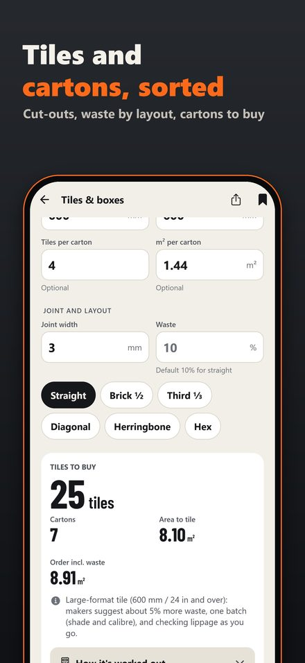
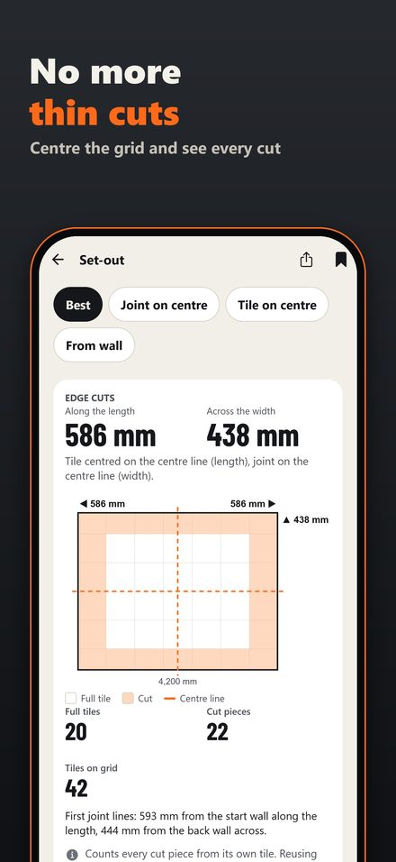
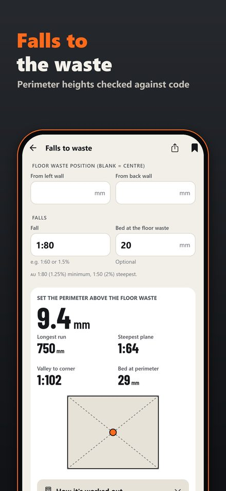
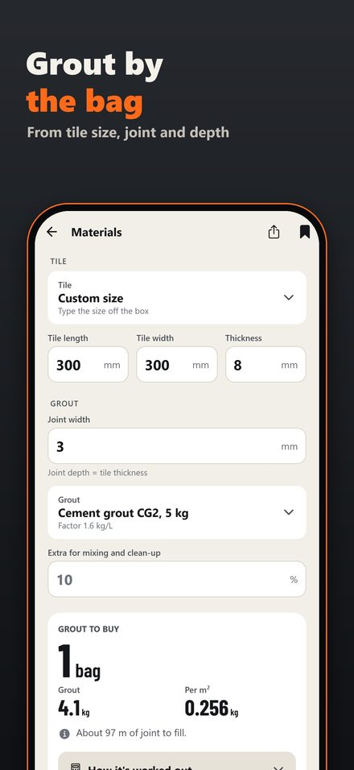

Groutline
Tile calculator for the job site
Groutline works out what a tiling job needs, using the sizes your local suppliers stock and the rules where you work. Pick your country once: Australia, New Zealand, the UK, Ireland, the US and Canada are fully guided; anywhere else gets metric with generic guidance.




Tiles & cartons
Floors and walls, L-shapes, cut-outs for windows, doors and baths, waste by layout.
Set-out
Centre the grid so edge cuts are even and never slivers, with a plan of every cut.
Grout, adhesive & membrane
Bags and packs from tile size, joint, trowel notch and the waterproofing take-off.
Falls to the waste
Perimeter heights, checked against your country's minimum and maximum fall.
Trim & edging
Lengths to buy with a cut list that reuses offcuts.
Stairs & steps
Tiles per tread and riser, nosings, and the riser check after build-up.
Price
Free download. The Tiles & cartons calculator is free for good. Try every other tool free for 7 days, then Full Unlock is a single payment: no subscription, no ads, no account.
Every answer shows its working. Quantities are estimates from makers' published coverage: check the product data sheet and your local rules before you order.